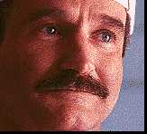

Contents | Features | Reviews | News | Archives | Store |
 |
|
| Movie Credits | Buy It! |
The Birdcage
Review by Carrie Gorringe
|  |
Starring Robin Williams, Screenplay by Elaine May |
Back in the 50s, director Nichols and writer/director May worked in nightclubs as a comedy team known as -- what else -- Nichols and May. Their humor always raised a knowing chuckle from the audience, even as that same audience felt the bite of their subtly-phrased wit. As with all good comedy, the aim of Nichols and May was to take an ugly aspect of human nature, expose it to the air, and then murder it publicly with lacerating wit. Emblematic of their approach is an excerpt from a routine in which a mother (quite obviously the archetypal Jewish Mother), played by May, anxiously asks her son (Nichols) if she has inadvertently upset him with her thoughtless comments. When her son responds that she has indeed done so, she responds by telling him that she would be the happiest mother in the world if what he told her was really true (this excerpting really doesn't do the team's work much justice; much of the effectiveness of Nichols and May's routines depended as much upon how things were said as what was said). Nichols and May were so successful that, by 1961, when the duo split up at the height of their fame, each was making half a million dollars a year (the equivalent of five million today). Although both would successfully transfer their skills to the cinematic realm and achieve critical renown (May worked on the critically-acclaimed 70s comedies The Heartbreak Kid (1972) and A New Leaf (1973)), it was Nichols who received greater fame and wealth, beginning with Who's Afraid of Virginia Woolf (1965), and onward to the present (at this point, poor May is probably best remembered for the infamous 1987 Beatty-Hoffman flop, Ishtar than anything else).
Now, Nichols and May have now worked on their first collaboration in thirty-five years with The Birdcage, an adaptation of Edouard Molinaro's 1978 film classic (and later a Broadway musical) La Cage aux Folles. Armand Goldman (Williams) and Albert (Lane) are a gay couple with a relationship of long standing. Armand is the manager of a popular drag nightclub called The Birdcage, and Albert appears nightly as "Starina", the club's headliner (with a large following). The relationship between Armand and Albert is not without its problems. Like any other performer, Albert fears the loss of youth, though his fears have taken on a somewhat more paranoid with the passing of time, and Armand's main task is to "psych up" Albert to get him into his stage regalia, a task which, as the film suggests, has become a nightly ordeal. Nevertheless, their relationship is a loving one; Albert, for all of his outbursts, has been an exemplary domestic engineer and "mother" to the son that Armand sired during a brief heterosexual liaison. Indeed, Albert's ability to balance the demands of home and career might well inspire envy in any working parent (there could be some sniping over Albert and Armand's ability to hire domestic help, except that their rather fey houseboy, Agador (Azaria), is literally a walking incompetent who falls down if he wears shoes). To all outward appearances, the mutual respect and support in this family is so perfect that it epitomizes that often-invoked concept of "family values", albeit with a bit of a twist.
All might be well for these birds of paradise, except for one tiny problem: their son, Val (Futterman), now wants to get married. Needless to say, this is going to be a bit of a problem: not only is the prospective bride's father, Senator Keeley (Hackman), a co-founder of the Institute for Moral Order (inspired by Jerry Falwell, no doubt), but, like any good politico with a second sense for avoiding the politically suicidal, he is, to put it politely, adverse to the idea of grafting homosexuals onto his immediate family tree (call it an unintentional form of political correctness). Fortunately for the Goldmans, the Senator and his dotty wife, Louise (Wiest), are not without a few skeletons of rather recent vintage rattling rather too loudly in their own closet. It seems that the other co-founder of Senator Keeley's institute, one Senator Jackson from Virginia, has placed the Institute's reputation in peril, having combined a violation of so-called family values, statuary rape, and interracial sex into a rather tawdry brew. Not surprisingly, the Keeleys, effectively placed under house arrest by the siege of television reporters around their estate, and desperate, in an election year, to regain the tatters of whatever moral high ground remains, begin to picture a nice "traditional" wedding as the solution to all of their problems. So, they and daughter Barbara (Flockhart) decide to travel on short notice to the Goldman residence, knowing nothing of the truth behind Armand and Albert's relationship, and panic sets in Miami's South Bend neighborhood. The first casualty of the Keeleys' arrival is the Goldmans' apartment; out go the pastel murals and statues with unique phallic accoutrements, in come the stiff-backed rectory chairs and twenty-foot-high crucifix over the fireplace (in a minimalist style best summed up as "Early Inquisition"). Redecorating the apartment is one thing, but "redecorating" Albert is quite another. After various and failed attempts to make Albert into an uncle, the only solution is for Armand and spouse to "play it straight", with predictably hilarious results.
And yet, for all of the talent behind The Birdcage, it is remarkable how often the film threatens to derail itself. Nichols and May are obviously (and understandably) very concerned about the consequences of combining broadly-drawn farce and gay characters. To say that May's script takes pains to depict Armand and Albert as characters with fully-faceted personalities is an understatement; so many opportunities are taken to weight the narrative down with good intentions that the farce very nearly slips permanently under the waves on at least a couple of occasions. If one didn't know better, this preoccupation with Armand and Albert's "difference" might be adduced as a shocking indication that May doesn't trust her very astute comedic instinct, one which should have told her that there was no need to pander to either extreme of the socio-political spectrum if the dialogue was sufficiently pointed; anyone who honestly believes that the relationship between Armand and Albert represents mainstream gay life (and, no, that is not an oxymoron) is halfway to homophobia and beyond help in any case. And, as in his last performance in Jumanji, Williams' comic talents are muted to the point of obliteration. In one all-too-brief flourish is Williams' manic self permitted an appearance; it occurs during a rehearsal, when Armand must demonstrate to an indifferent performer the psychological demands of a performance. Williams then goes through a comically-immaculate montage of different choreographic styles, including that of Bob Fosse and Martha Graham (but not that of Jerome Robbins, or else Armand would have ended up outside the door of the nightclub in one balletic leap). He concludes his demonstration with the phrase, "But you keep it all inside." Unfortunately, the statement is a metaphor for how the cast is obliged to perform. Granted, the payoff provided in the third act is worth the wait, but there are times when The Birdcage inspires the gritting, rather than the grinning, of teeth.
Fortunately, it is the talent in front of the screen that lifts The Birdcage when it threatens to sink into the bog of irremediable political correctness. Despite his restraint, Williams turns in a performance which has a wonderfully low-key incandescence at its center. His Armand is painfully attuned to the difficulties of being gay in a heterosexual world; every expression and inflection registers his profound discomfort that, regardless of how much good will that he and Albert have built up in the course of their long association, and regardless of the extent to which their relationship is modeled on heterosexual values that even most heterosexuals can't attain, he and Albert are always going to be beyond the social pale. Armand's illusions, so carefully constructed with his life with Albert and maintained by his success in business, are brutally shattered within twenty-four hours of Val's announcement. At times, it seems as if Armand is being forced to choose between Albert and his son, and Williams makes Armand's indignity at even having to make such a choice so heartbreakingly clear, even without didactic dialogue to press the point home (it is this talent in which Nichols and May should have placed their trust). Previously seen almost exclusively on Broadway (notably in the recent revival of Guys and Dolls), Lane's sparkling portrayal of Albert should put an end to his cinematic anonymity once and for all. Like that of Williams, Lane's impeccable portrayal puts a human face upon what might have been a stereotypical portrayal of a gay man, and when he is allowed to let loose in the final act, Lane becomes a very witty center of attention; among his bon mots is a deliciously nasty, Swiftian analogy for solving the dilemma of abortion. Since they aren't carrying the burden of having to provide positive role models, it might be argued that both Hackman and Wiest have an easier task, but they both rise to the occasion and give equally brilliant performances satirizing the values of the not-so-upright but very uptight Keeleys. In one scene in particular, Hackman elevates Senator Keeley's insufferably long-winded monologue concerning the "joys" of highway travel in the US to the status of a comedy classic. With his ambulatory dyslexic timing, Azaria is an inspired comic foil to the Goldman-Keeley standoff. In a brief appearance as the mother whom Val has never known, Baranski (known to US audiences as the dipsomaniacal, or simply maniacal, friend of "Cybill") turns in fine work. And both Futterman and Flockhart provide the appropriate support as the instigators of the proceedings.
Whatever problems The Birdcage has, there aren't enough of them to cancel out the great film underneath; it keeps popping up in spite of them. It has great acting, enough deeper significance, and (when permitted) sufficient levels of mordant and topical wit to make it more than worthwhile. There are indications that the second coming of Nichols and May promises to yield more collaborative projects. Once they get some of the kinks ironed out, Nichols and May will provide welcome relief to a movie industry starved for intelligent comedy.
Contents | Features
| Reviews | News | Archives | Store
Copyright © 1999 by Nitrate Productions, Inc. All Rights Reserved.